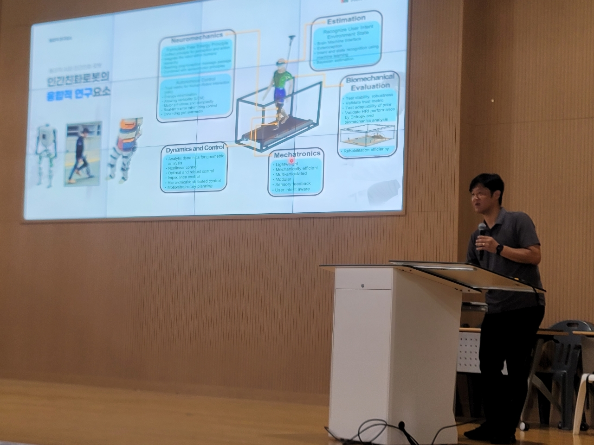
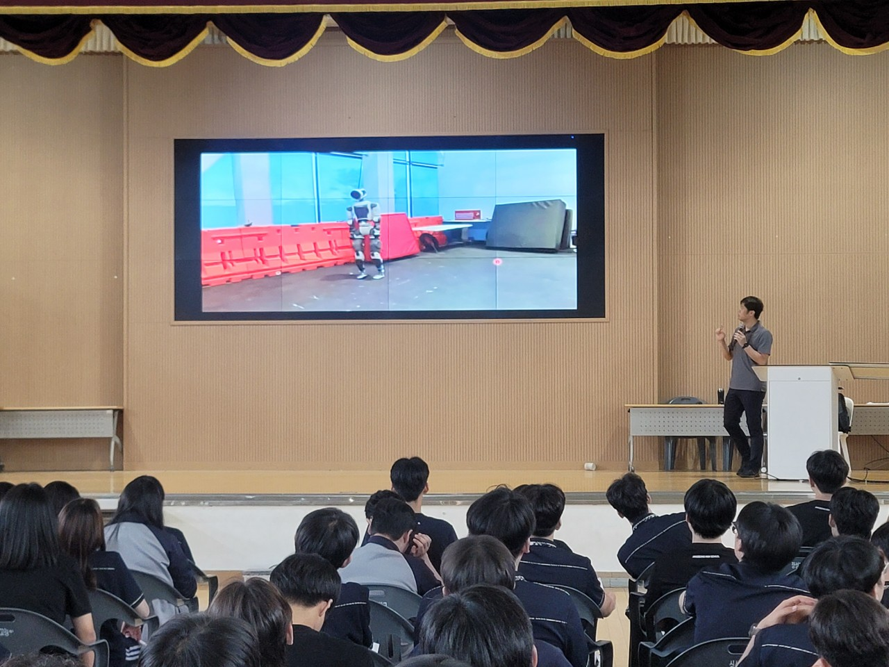

작성자: 허필원
지난 7월 10일, 허필원 교수(GIST 기계공학부)가 장성고등학교를 방문해 "물리적 AI와 인간 친화 로봇"을 주제로 특강을 진행했습니다. 이번 강의는 GIST와 장성고등학교 간의 지역사회 연계 프로그램의 일환으로, 인근에 위치한 두 기관이지만 학생들이 느끼는 거리감을 좁히고 연구 현장을 직접 소개하기 위해 마련되었습니다. 장성고등학교 1, 2학년 학생들이 참여한 이번 특강은 연구의 융합적 측면과 AI 시대를 살아가는 학생들의 자세에 대해 깊이 있게 다뤘습니다.

첫 번째 발표에서는 인간의 보행 습득 과정과 로봇 공학의 연결고리를 중심으로 이야기를 시작했습니다. 아기가 반복과 학습을 통해 걷는 법을 익히는 과정에서 신체 구조와 환경이 보행 방식에 미치는 영향, 그리고 뇌성마비 등 다양한 사례에서 관찰되는 보행의 다양성에 대해 설명했습니다.
"신체 구조에 따라 최적의 걷기 방식이 달라집니다. 물리적 한계가 움직임을 결정하죠. 그래서 로봇을 설계할 때도 인간의 움직임을 참고합니다."
휴머노이드 로봇의 특징과 역할에 대해서도 다뤘습니다. 인간과 유사한 외형(두 팔, 두 다리, 머리)을 가진 로봇이 인간 환경에서 작업을 수행할 수 있는 이유, 그리고 이러한 로봇이 신경역학(Neuromechanics), 동역학 및 제어, 메카트로닉스, 생체역학 평가, 인간-로봇 상호작용(Human Factors) 등 다양한 첨단 기술의 집약체임을 강조했습니다.
자유에너지 이론과 학습에 대한 설명도 이어졌습니다. 인간이 예측과 학습을 통해 놀라움을 최소화하는 방식, Perception(지각), Action(행동), Learning(학습)의 통합, 그리고 노이즈와 불확실성을 극복하는 뇌의 전략에 대해 이야기하며, 이러한 원리들이 로봇 공학에 어떻게 적용되는지 설명했습니다.

두 번째 발표는 AI 시대의 도래와 변화하는 사회 구조에 초점을 맞췄습니다. 특히 주목할 점은 이 발표 자료가 완전히 AI 툴만으로 제작되었다는 사실입니다. 이는 AI가 단순히 도구가 아니라 이미 우리 일상과 작업에 깊이 스며들어 있음을 보여주는 생생한 예시였습니다.
"AI는 더 이상 미래가 아니라 현재입니다. AI 에이전트와 오토노머스 컴퍼니가 사회와 산업 구조를 빠르게 바꾸고 있습니다."
발표에서는 AI로 인해 개발자, 변호사, 연구자 등 기존 직업이 빠르게 변화하고 있으며, 1인 기업과 새로운 직업이 등장하고 있다는 현실을 구체적인 사례와 함께 제시했습니다. 2023년 미국에서 30만 명의 소프트웨어 개발자가 해고된 사례, 영국에 변호사 한 명도 없는 AI 로펌이 등장한 사례 등을 통해 변화의 속도와 규모를 생생하게 전달했습니다.
교육과 입시의 현실적 고민도 다뤘습니다. 한 학기에 50번의 평가, 고교학점제로 과목 수가 127개까지 늘어나는 현실 속에서 학생들이 진짜 배우고 싶은 것이 무엇인지 고민해야 한다는 메시지를 전달했습니다.
발표의 핵심 메시지는 AI가 할 수 없는 인간 고유의 역량에 대한 것이었습니다. 질문하는 힘, 메타인지, 회복탄력성이 더욱 중요해졌다는 점을 강조했습니다.
"AI는 정답을 더 잘 찾지만, 올바른 질문을 던지는 능력은 인간만이 가질 수 있습니다. 실패를 통해 배우고 다시 도전하는 회복탄력성이 미래 경쟁력입니다."
학생들에게는 융합교육, 협동, 올바른 질문, 다양한 경험이 미래 경쟁력이라는 조언을 전했습니다. 단편 지식보다 통합적 시각, 작은 경쟁보다 큰 협동이 중요하다는 메시지였습니다.
"지식의 암기는 AI가 더 잘합니다. 올바른 질문을 할 줄 알아야 합니다. 쟤가 잘 돼야 내가 더 잘됩니다. 협동을 통해 더 큰일을 성취하세요."
이번 특강은 허필원 교수가 GIST의 장성 특임대사로서 지역사회와의 연결고리를 강화하기 위한 노력의 일환이었습니다. 지스트와 장성고등학교가 바로 근처에 위치해 있지만, 학생들이 지스트를 멀게 느끼는 현실을 개선하고, 연구 현장을 직접 소개함으로써 지역사회에도 도움이 되고자 하는 목적이 담겨있었습니다.
학생들은 이번 강의를 통해 로봇공학, 신경과학, 메카트로닉스 등 융합 분야에 대한 기초 지식을 접할 수 있었고, 동시에 AI 시대를 살아가는 자신만의 자세와 가치관에 대해 깊이 생각해볼 수 있는 시간을 가졌습니다.
이번 특강을 통해 지역 고등학생들이 연구 현장을 더 가깝게 느끼고, 미래의 연구자로서의 꿈을 키워나갈 수 있기를 기대합니다. 앞으로도 GIST와 지역사회 간의 소통과 협력이 지속되기를 바랍니다.
참가자 명단: 허필원, 장성고등학교 1,2학년 학생들, 장성고등학교 교사들